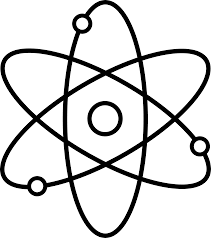
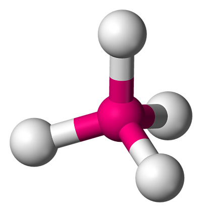
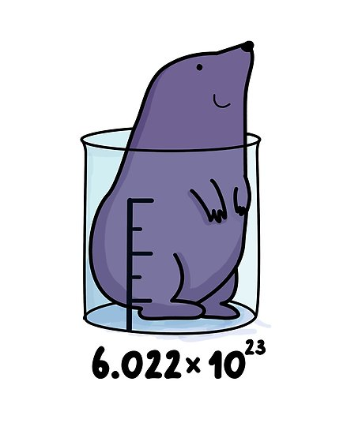
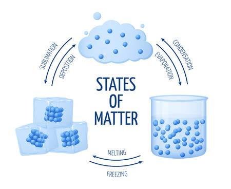
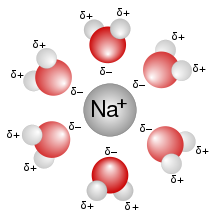
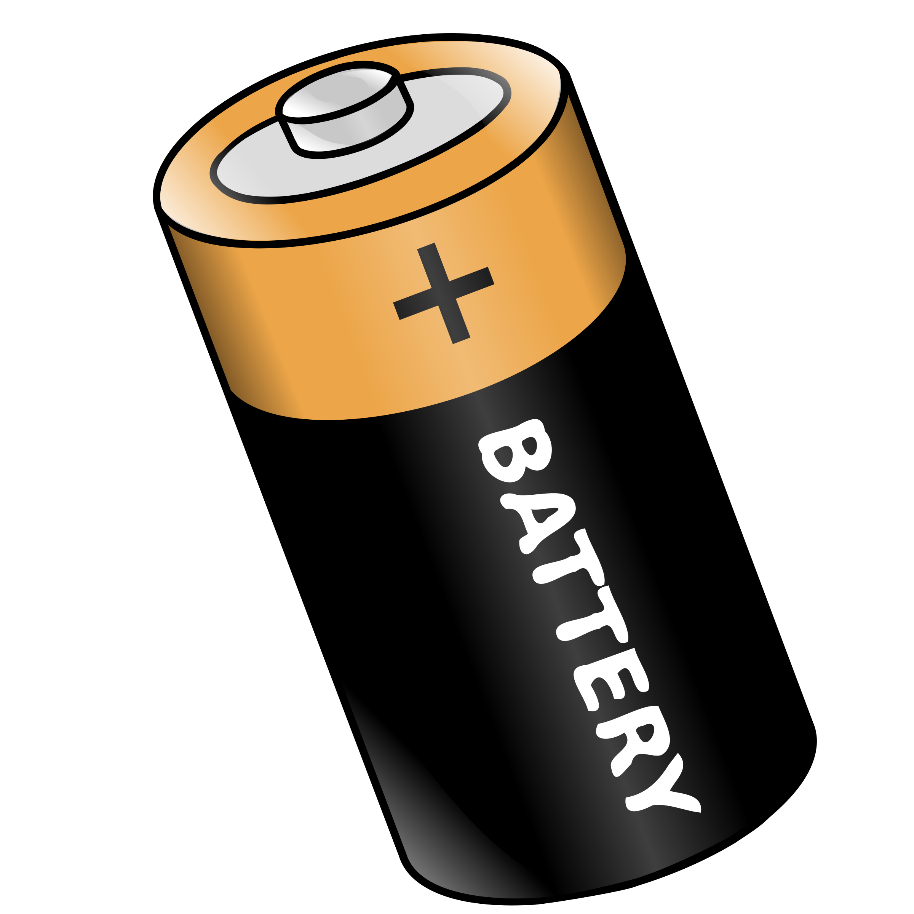
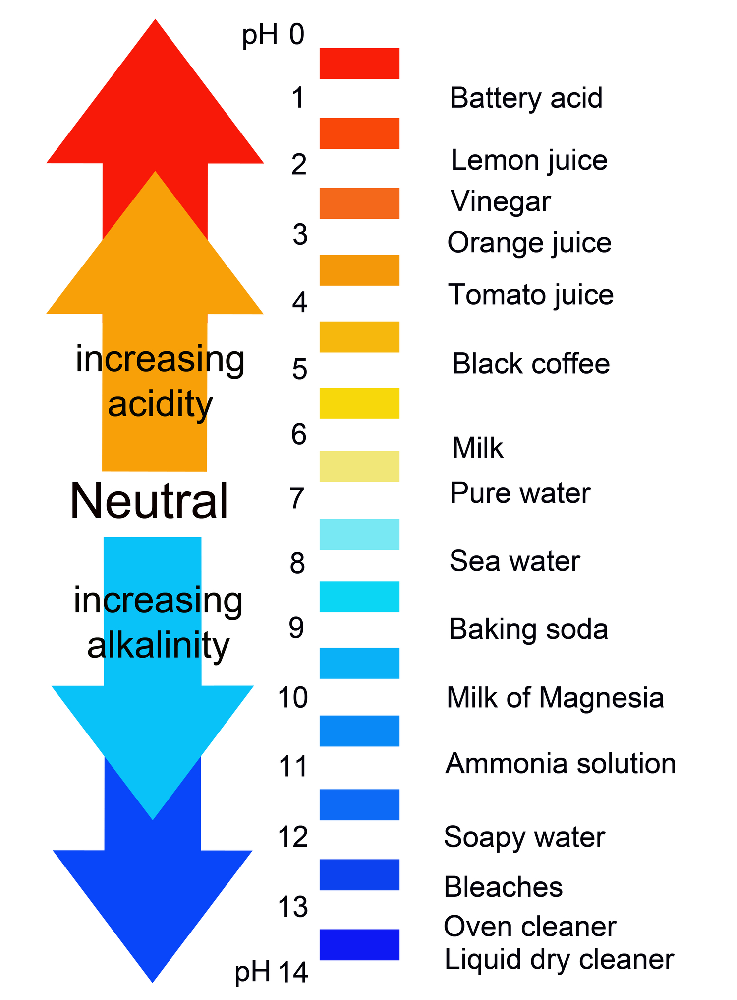

Basics

The Atom
Modern Atomic Theory
Formulas and Reactions

Chemical Bonding

The Mole and Stoichimetry

Gases

Solids and Liquids

Solutions

Reaction Dynamics

Redox

Acids and Bases

Organic
Nuclear